个人文档
功能描述：支持新增、查看、删除用户个人文档文件。
若第一次进入系统没有目录,则可以点击[新建个人文档目录]。
操作：点击新建文档目录，编写目录名称、次序、文档描述，选择是否共享，点击保存。
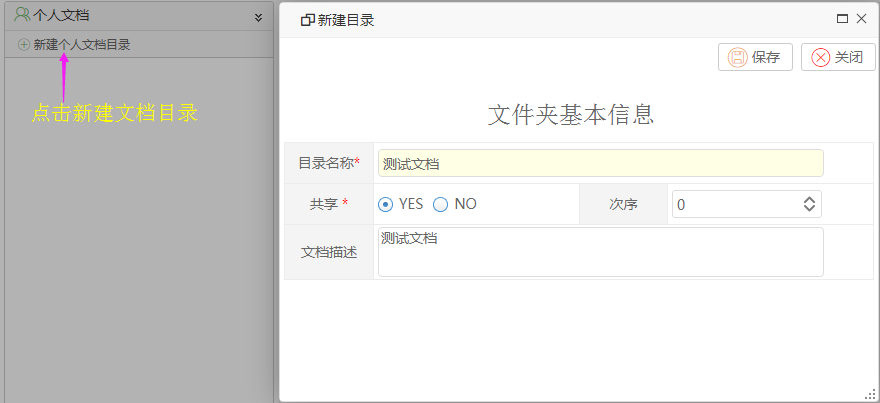
界面展示：
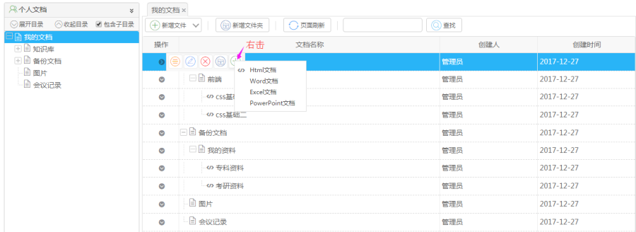
【说明】
包含子目录：列表是否显示子目录
新增文件：新增文件，可建四种文档（Html、Word、Excel、PowerPoint）
新增文件夹：新建文件夹
查找：根据条件查询文件夹或文件
明细：查看文件信息
编辑：根据所选节点编辑文件夹或文件
删除：根据所选节点删除文件夹或文件
操作指导：
【新建文件目录】
操作：右键点击目录，选择操作。
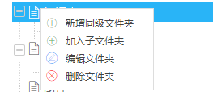
【新建同级文件夹】
操作：填写目录名称，选择是否共享，设置排序，点击保存（加入子文件夹，编辑文件夹操作相同）。
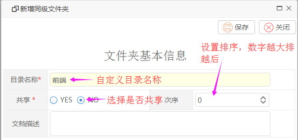
【包含字目录】
（默认勾选）
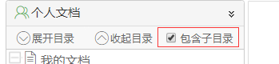
操作：
勾选：查找所选节点下所有文件夹及文件。
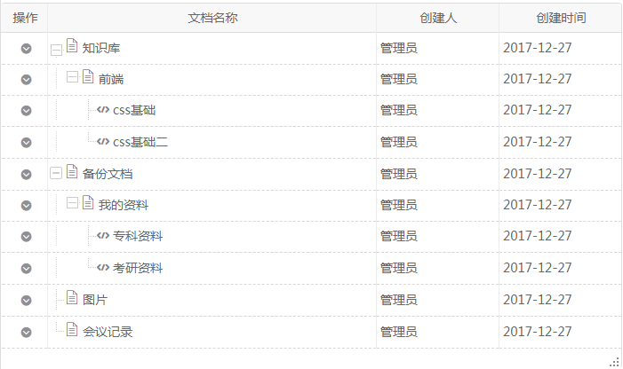
不勾选：只查找本节点下的文件夹或文件。
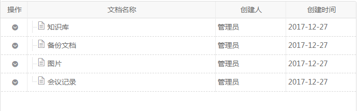
【新增文件】
操作：填写基本信息，添加内容，设置权限控制，点击保存。（注：编辑文件操作相同）
1、填写基本信息。
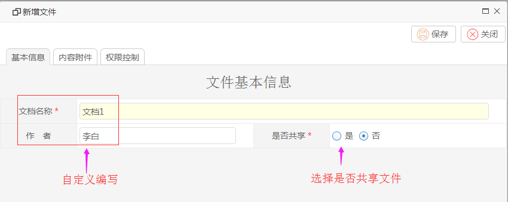
2、编辑内容
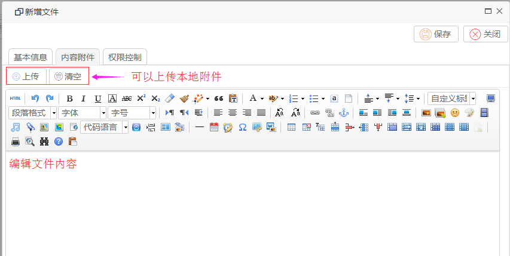
3、设置权限
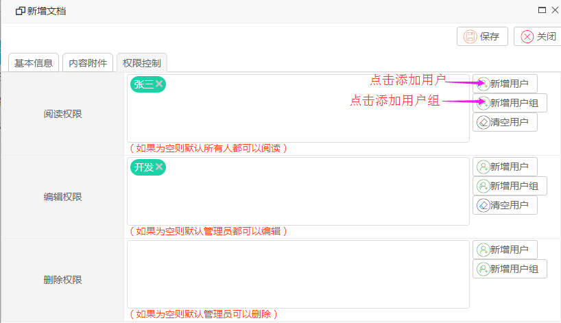
【查询】
操作：填写查询条件，点击查询。
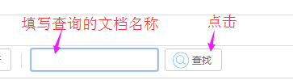